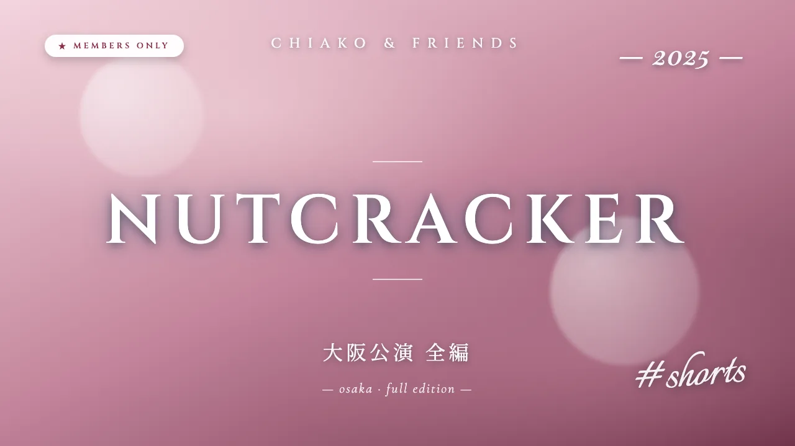

公演本編は ちあこちゃんねるメンバーシップ でご覧いただけます
PROGRAM — 出演演目・キャスト
2025年8月2日、門真市民文化会館ルミエールホール 大ホール(大阪)で上演。第1部はくるみ割り人形の「前夜」を描くオリジナル設定 + 世界三大バレエ(白鳥の湖・眠れる森の美女・くるみ割り人形)のチャイコフスキー作品集。第2部はくるみ割り人形を凝縮した #shorts 本編。世界各国のバレエ団で活躍するダンサーが彩りました。
第1部 — くるみ割り人形「前夜」+ チャイコフスキー集
クララのパーティーの前夜、ドロッセルマイヤーが人形を片付けると人形たちが動き出す——オリジナル設定の第1部。世界三大バレエ(すべてチャイコフスキー作曲)から、第2部の #shorts 本編に入らない名場面を上演しました。
- 白鳥の湖 道化寺田 智羽 (エカテリンブルク歌劇場バレエ団 ソリスト)
- 白鳥の湖 パ・ド・トロワ(王子)一井 あかね (エストニア国立バレエ団 ソリスト) / 奥野 凜(ルーマニア国立オペラ座劇場バレエ団 プリンシパル) / 山本 あらた (エストニア国立バレエ団 コール・ド)
- 白鳥の湖 小さい4羽の白鳥岡野 祐女 (ポーランド国立バレエ団 コリフェ) / 高森 美結 (ハンガリー国立バレエ団 ソリスト) / 本田 千晃 / 若林 侑希 (ハンガリー国立バレエ団 グランド・スジェ)
- 眠れる森の美女 カナリアの精本田 千晃
- 眠れる森の美女 リラの精山本 怜(ポーランド・バルティック歌劇場 ソリスト)
- 眠れる森の美女 第3幕 フロリナ王女岡野 祐女 (ポーランド国立バレエ団 コリフェ)
- くるみ割り人形 ピエロ西川 啓輔 (フォートウェイン・バレエ)
- くるみ割り人形 ムーア人形清田 元海 (ハンガリー国立バレエ団 グランド・スジェ)
第2部 — くるみ割り人形 #shorts(本編)
バレエ作品『くるみ割り人形』の見どころを凝縮した #shorts 本編。チャイコフスキーの名曲にのせた夢の舞台。
- くるみ割り人形 金平糖の精奥野 凜(ルーマニア国立オペラ座劇場バレエ団 プリンシパル)
- くるみ割り人形 王子住友 拓也 (クロアチア国立劇場 プリンシパル)
- くるみ割り人形 クララ本田 千晃
- くるみ割り人形 ドロッセルマイヤーロベルト・エナケ (ルーマニア国立オペラ座劇場バレエ団 プリンシパル)
- くるみ割り人形 雪の精のソロ / スペイン一井 あかね (エストニア国立バレエ団 ソリスト)
- くるみ割り人形 アラビア須藤 千尋 (チェコ国立バレエ団 コール・ド)
- くるみ割り人形 中国岡野 祐女 (ポーランド国立バレエ団 コリフェ) / 寺田 智羽 (エカテリンブルク歌劇場バレエ団 ソリスト)
- くるみ割り人形 ロシア清田 元海 (ハンガリー国立バレエ団 グランド・スジェ) / 西川 啓輔 (フォートウェイン・バレエ)
- くるみ割り人形 フランス高森 美結 (ハンガリー国立バレエ団 ソリスト) / 山本 あらた (エストニア国立バレエ団 コール・ド) / 若林 侑希 (ハンガリー国立バレエ団 グランド・スジェ)
- くるみ割り人形 花のワルツ山本 怜(ポーランド・バルティック歌劇場 ソリスト)
NEXT STAGE
2026 GISELLE #shorts
次回公演は 2026 年 7 月 30 日(木)めぐろパーシモンホール 大ホール。
プロバレエダンサー 11 名が贈る『ジゼル』。